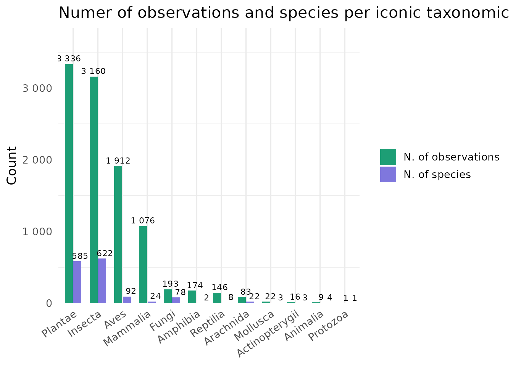
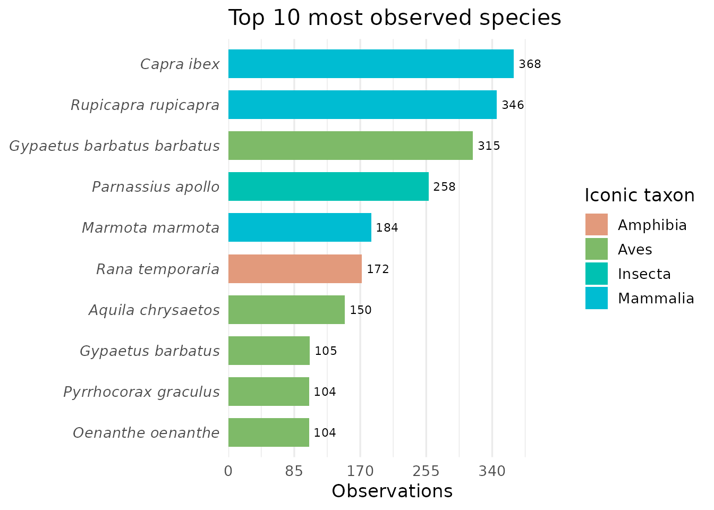
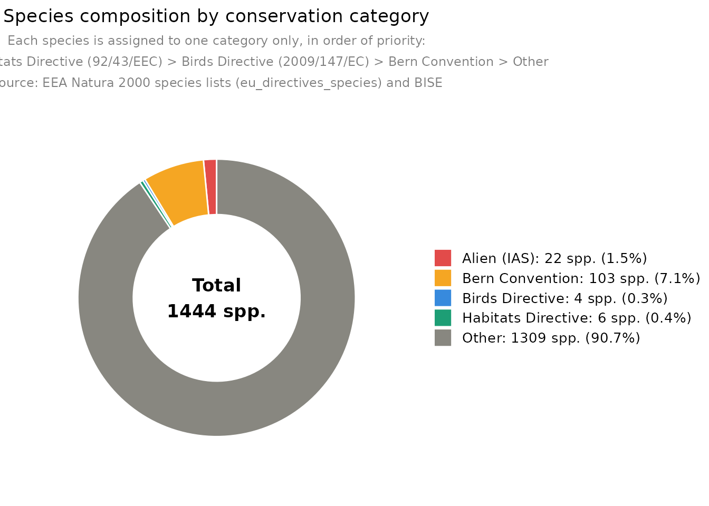
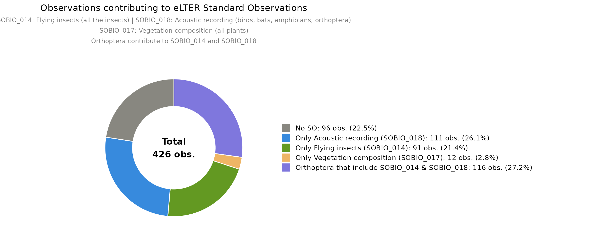

Visualization functions
Source:vignettes/articles/ReLTER_inatEnrich_charts.Rmd
ReLTER_inatEnrich_charts.RmdOverview
This article illustrates the visualization functions available in
ReLTER.inatEnrich using occurrence data from the Gran
Paradiso National Park eLTER site — one of the long-term ecosystem
research sites within the eLTER-RI network. Functions cover taxonomic
composition, conservation status, temporal distribution, and the
contribution of observations to eLTER Standard Observations (SOs).
# Occurrence data from Gran Paradiso National Park eLTER site
# DEIMS-ID: https://deims.org/15c3e841-8494-42d2-a44e-c49a0ff25946
df <- ReLTER.inatEnrich::occ_eLTER_legal
site_boundary <- ReLTER.inatEnrich::site_boundaryTaxonomic composition
iconic_taxa() shows the number of observations and
species per iNaturalist iconic taxon group.
iconic_taxa(df)
Top observed species
top_n_species() displays the most observed species
coloured by iconic taxon group.
top_n_species(df, n = 10)
Conservation category
obs_pie_chart() summarises species by conservation
category following a fixed priority order: Alien (IAS) > Habitats
Directive > Birds Directive > Other.
obs_pie_chart(df)
eLTER RI Standard Observation
obs_SO_pie_chart() shows how observations contribute to
eLTER Standard Observations SOBIO_014 (Flying insects) and SOBIO_018
(Acoustic recording — birds, bats, amphibians and orthoptera).
Orthoptera contribute to both SOs simultaneously.
obs_SO_pie_chart(df)
Interactive maps
species_richness_map() produces an interactive Leaflet
map where each grid cell is coloured by species richness.
species_richness_map(
df = df,
site_boundary = site_boundary,
cell_size = 0.01
)create_leaflet_occ_map() shows each observation as a
circle marker coloured by iconic taxon group, with a detailed popup per
observation.
create_leaflet_occ_map(
occ_enriched = df,
site_boundary = site_boundary
)